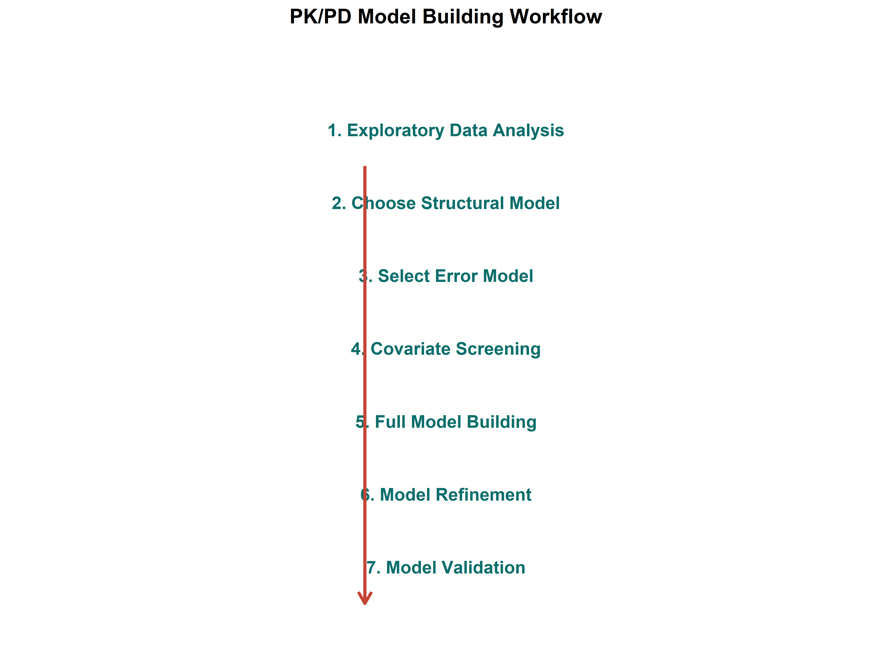
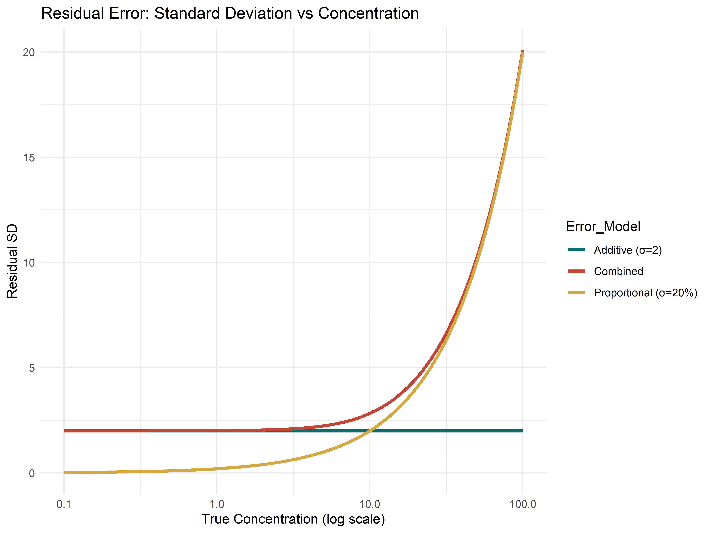
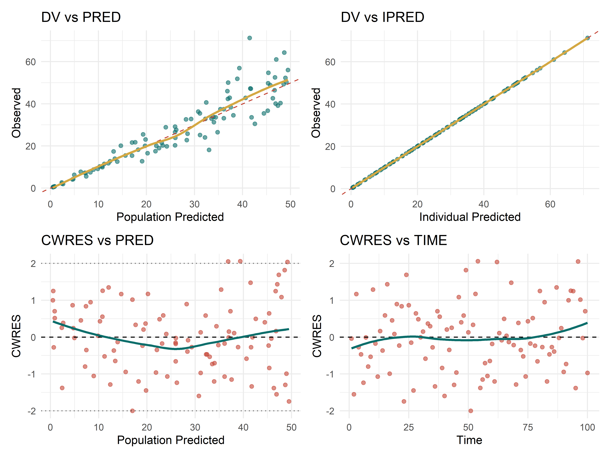
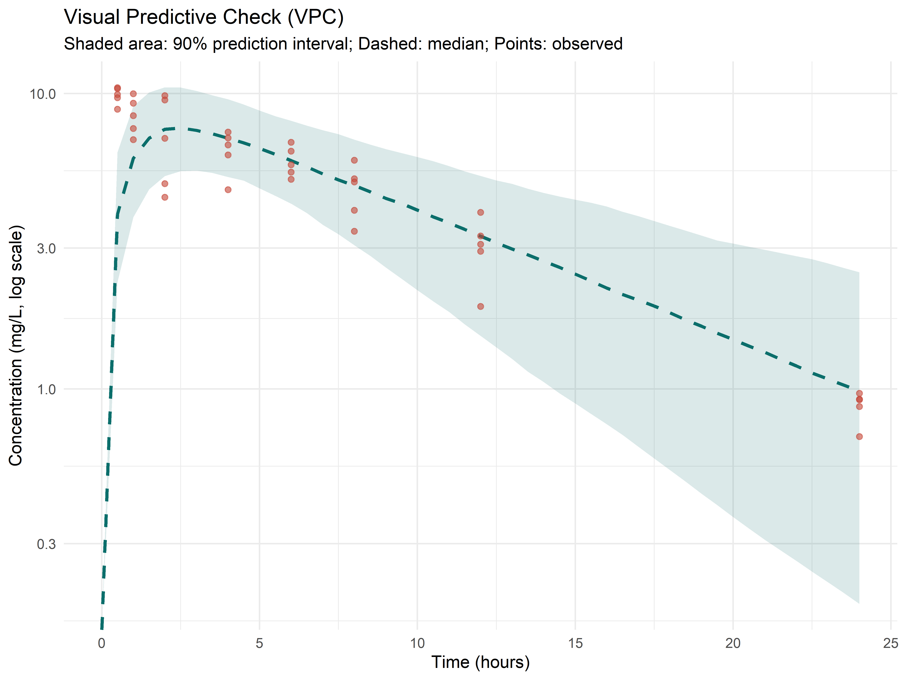

13 Model Building and Diagnostics
13.1 Learning Objectives
By the end of this chapter you will be able to:
- Choose an appropriate structural PK/PD model
- Select and evaluate residual error models
- Create goodness-of-fit plots for model evaluation
- Perform visual predictive checks (VPC)
- Use bootstrap for uncertainty assessment
- Apply objective function criteria for model selection
13.2 The Model Building Workflow
13.3 Choosing the Structural Model
13.3.1 Decision Criteria
| Criterion | How to Assess |
|---|---|
| Scientific plausibility | Does the model reflect known physiology? |
| Data support | Can the data distinguish between models? |
| Objective function (OFV) | Lower OFV = better fit |
| AIC/BIC | Penalizes for extra parameters |
| Goodness-of-fit plots | Visual assessment of fit quality |
| Parameter precision | RSE% should be reasonable (< 30–50%) |
Code
library(dplyr)
library(ggplot2)
# Simulate data from a two-compartment model
set.seed(123)
sample_times <- c(0.05, 0.1, 0.25, 0.5, 1, 2, 4, 6, 8, 12, 24)
true_A <- 15; true_alpha <- 2.5
true_B <- 8; true_beta <- 0.25
obs <- data.frame(
time = sample_times,
conc = true_A * exp(-true_alpha * sample_times) +
true_B * exp(-true_beta * sample_times)
)
obs$conc <- obs$conc * exp(rnorm(nrow(obs), 0, 0.1))
# Fit one-compartment
fit1 <- nls(conc ~ C0 * exp(-ke * time), data = obs,
start = list(C0 = 20, ke = 0.3))
# Fit two-compartment
fit2 <- nls(conc ~ A * exp(-alpha * time) + B * exp(-beta * time),
data = obs,
start = list(A = 15, alpha = 2, B = 8, beta = 0.2),
lower = c(0, 0, 0, 0), algorithm = "port")
# Model comparison
model_comp <- data.frame(
Model = c("One-Compartment", "Two-Compartment"),
AIC = round(c(AIC(fit1), AIC(fit2)), 1),
BIC = round(c(AIC(fit1) + 2*log(nrow(obs)), AIC(fit2) + 4*log(nrow(obs))), 1),
Parameters = c(2, 4)
)
knitr::kable(model_comp, caption = "Model Comparison")| Model | AIC | BIC | Parameters |
|---|---|---|---|
| One-Compartment | 44.4 | 49.2 | 2 |
| Two-Compartment | 35.5 | 45.1 | 4 |
13.4 Residual Error Models
13.4.1 Common Error Models
| Model | Equation | When to Use |
|---|---|---|
| Additive | Y = F + \varepsilon | Constant error across concentrations |
| Proportional | Y = F \cdot (1 + \varepsilon) | Error scales with concentration |
| Combined | Y = F \cdot (1 + \varepsilon_1) + \varepsilon_2 | Both components present |
| Log-additive | \log(Y) = \log(F) + \varepsilon | Lognormal error, PK default |
Code
# Visualize different error models
conc_true <- 10^seq(-1, 2, length.out = 100)
set.seed(123)
add_err <- 2
prop_err <- 0.2
df_errors <- data.frame(
conc = rep(conc_true, 3),
Error_Model = rep(c("Additive (σ=2)", "Proportional (σ=20%)", "Combined"), each = 100),
SD = c(rep(add_err, 100),
prop_err * conc_true,
sqrt(add_err^2 + (prop_err * conc_true)^2))
)
ggplot(df_errors, aes(conc, SD, color = Error_Model)) +
geom_line(linewidth = 1.2) +
scale_x_log10() +
labs(title = "Residual Error: Standard Deviation vs Concentration",
x = "True Concentration (log scale)", y = "Residual SD") +
scale_color_manual(values = c("#0B6E6B", "#C44536", "#D4A843")) +
theme_minimal()
13.5 Goodness-of-Fit Plots
13.5.1 The Four Essential Plots
Code
# Generate example diagnostic data
set.seed(42)
n <- 100
pred <- runif(n, 0.5, 50)
obs <- pred * exp(rnorm(n, 0, 0.2))
ipred <- obs # simplified
time <- 1:n
diag_data <- data.frame(
DV = obs, PRED = pred, IPRED = ipred,
CWRES = rnorm(n, 0, 1), TIME = time,
IWRES = (log(obs) - log(pred)) / 0.2
)
# 1. DV vs PRED
p1 <- ggplot(diag_data, aes(PRED, DV)) +
geom_point(alpha = 0.6, color = "#0B6E6B") +
geom_abline(slope = 1, intercept = 0, color = "#C44536", linetype = "dashed") +
geom_smooth(method = "loess", se = FALSE, color = "#D4A843", linewidth = 1) +
labs(title = "DV vs PRED", x = "Population Predicted", y = "Observed") +
theme_minimal()
# 2. DV vs IPRED
p2 <- ggplot(diag_data, aes(IPRED, DV)) +
geom_point(alpha = 0.6, color = "#0B6E6B") +
geom_abline(slope = 1, intercept = 0, color = "#C44536", linetype = "dashed") +
geom_smooth(method = "loess", se = FALSE, color = "#D4A843", linewidth = 1) +
labs(title = "DV vs IPRED", x = "Individual Predicted", y = "Observed") +
theme_minimal()
# 3. CWRES vs PRED
p3 <- ggplot(diag_data, aes(PRED, CWRES)) +
geom_point(alpha = 0.6, color = "#C44536") +
geom_hline(yintercept = 0, linetype = "dashed") +
geom_hline(yintercept = c(-2, 2), linetype = "dotted", alpha = 0.5) +
geom_smooth(method = "loess", se = FALSE, color = "#0B6E6B", linewidth = 1) +
labs(title = "CWRES vs PRED", x = "Population Predicted", y = "CWRES") +
theme_minimal()
# 4. CWRES vs TIME
p4 <- ggplot(diag_data, aes(TIME, CWRES)) +
geom_point(alpha = 0.6, color = "#C44536") +
geom_hline(yintercept = 0, linetype = "dashed") +
geom_smooth(method = "loess", se = FALSE, color = "#0B6E6B", linewidth = 1) +
labs(title = "CWRES vs TIME", x = "Time", y = "CWRES") +
theme_minimal()
library(patchwork)
(p1 + p2) / (p3 + p4)
13.6 Visual Predictive Check (VPC)
The VPC simulates data from the final model and compares the observed data distribution to the simulated distribution:
Code
# Simulate a VPC
library(rxode2)
set.seed(42)
n_sim <- 500
times <- seq(0, 24, by = 0.5)
# Simulate from a reference model
mod_ref <- rxode2({
d/dt(depot) <- -ka * depot
d/dt(central) <- ka * depot - (CL/V) * central
conc <- central / V
})
# Population parameters with variability
pop_params <- c(ka = 1.0, CL = 5, V = 50)
vpc_data <- lapply(1:n_sim, function(i) {
params <- c(
ka = 1.0 * exp(rnorm(1, 0, 0.3)),
CL = 5.0 * exp(rnorm(1, 0, 0.3)),
V = 50 * exp(rnorm(1, 0, 0.2))
)
event <- et(time = 0, amt = 500)
sim <- rxSolve(mod_ref, params, event %>% et(times))
as.data.frame(sim) %>% mutate(sim_id = i)
})
vpc_df <- bind_rows(vpc_data)
# Compute percentiles of simulated data
vpc_summary <- vpc_df %>%
group_by(time) %>%
summarise(
p05 = quantile(conc, 0.05),
p50 = quantile(conc, 0.50),
p95 = quantile(conc, 0.95),
.groups = "drop"
)
# Generate "observed" data (a single trial)
set.seed(99)
obs_data <- data.frame(
time = rep(c(0.5, 1, 2, 4, 6, 8, 12, 24), each = 5),
ID = rep(1:5, 8)
) %>%
mutate(
conc = 500/50 * exp(-5/50 * time) * exp(rnorm(n(), 0, 0.2))
)
# VPC plot
ggplot() +
geom_ribbon(data = vpc_summary, aes(time, ymin = p05, ymax = p95),
fill = "#0B6E6B", alpha = 0.15) +
geom_line(data = vpc_summary, aes(time, p50),
color = "#0B6E6B", linewidth = 1, linetype = "dashed") +
geom_point(data = obs_data, aes(time, conc, group = ID),
color = "#C44536", size = 1.5, alpha = 0.6) +
scale_y_log10() +
labs(title = "Visual Predictive Check (VPC)",
subtitle = "Shaded area: 90% prediction interval; Dashed: median; Points: observed",
x = "Time (hours)", y = "Concentration (mg/L, log scale)") +
theme_minimal()
13.7 Bootstrap for Uncertainty
Bootstrap resampling provides non-parametric confidence intervals for parameter estimates:
Code
# Simplified bootstrap example
n_boot <- 200
bootstrap_params <- matrix(NA, nrow = n_boot, ncol = 3)
for (i in 1:n_boot) {
# Resample subjects with replacement
boot_ids <- sample(unique(pk_data$ID), replace = TRUE)
boot_data <- do.call(rbind, lapply(seq_along(boot_ids), function(j) {
orig_data <- pk_data[pk_data$ID == boot_ids[j], ]
orig_data$ID <- j # Rename to avoid duplicates
orig_data
}))
# Fit model to bootstrap sample and store parameters
# bootstrap_params[i, ] <- coef(fit_boot)
}13.8 Model Selection Criteria
| Criterion | Formula | Notes |
|---|---|---|
| OFV | -2 \times \log(Likelihood) | Lower = better |
| AIC | OFV + 2p | Penalizes for p parameters |
| BIC | OFV + p \cdot \ln(n) | Stronger penalty for large n |
| ΔOFV | OFV_1 - OFV_2 | \sim \chi^2 with df = p_2 - p_1 |
For nested models, a drop in OFV > 3.84 (p < 0.05, 1 df) is considered significant.
13.9 Model Selection Decision Tree
| Step | Yes | No |
|---|---|---|
| Is clearance constant (linear PK)? | → Analytical 1-/2-compartment (Ch 6-7) | → ODE with MM/induction/inhibition (Ch 11, 16) |
| Does effect lag concentration (hysteresis)? | → Add effect compartment (Ch 10) | → Direct Cp→E Emax/Hill model (Ch 9) |
| Multiple subjects with variability to explain? | → NLME / Covariate model (Ch 12, 16) | → Standard NLS/MLE (Ch 9, 13) |
| Need uncertainty quantification / priors? | → Bayesian MCMC/Stan (Ch 18) | → Frequentist NLS/MLE/NLME suffices |
13.10 Identifiability: Can Your Data Support Your Model?
Identifiability asks whether unique parameter values can be recovered from available data. An unidentifiable model can produce the same fit with very different parameter combinations — making estimates meaningless.
13.10.1 Identifiability Red Flags
Too many parameters for the data: Estimating > 4-5 parameters simultaneously from one dataset without fixing any externally-derivable values (e.g., V from NCA, k_a from literature)
Coupled multi-state systems: PK+PD+disease or two-drug DDI models where the parameter count grows faster than informative data points. Each new state typically adds 2-4 parameters.
Flat or ridge-shaped likelihood/posterior: Check via profile likelihood (fix one parameter at a range of values, re-optimize the rest, watch OFV) or posterior pairs plots — if the OFV barely changes as a parameter varies over a wide range, that parameter is unidentifiable.
High parameter correlations: |\rho| > 0.95 between estimates (e.g., CL and V in oral dosing without IV data). The correlation matrix from
nls/nlmeoutput is your first diagnostic.k_a and k_e in oral data: Without early sampling (< 30 min post-dose), these two rate constants are notoriously confounded — the “flip-flop” phenomenon.
13.10.2 The Sensitivity Triage Principle
Run sensitivity analysis before estimation to triage which parameters to fit vs fix. Parameters with first-order Sobol index S_i < 0.05 (explain < 5% of output variance) are strong candidates for fixing at literature values. This reduces the estimation burden and improves identifiability of the remaining parameters. See Chapter 20 for full methodology.
13.11 The Estimation Ladder
PK/PD parameter estimation forms a ladder of increasing complexity and information:
| Rung | Method | R Function | Use When |
|---|---|---|---|
| 1 | OLS (linearized) | lm() |
Quick initial estimates; log-transform C vs t for k_e |
| 2 | WLS | lm(weights = ...) |
Heteroscedastic residuals (variance not constant) |
| 3 | NLS | nls() / nlsLM() |
Nonlinear model with additive error on natural scale |
| 4 | MLE | stats4::mle() |
Need \sigma, asymptotic CIs, non-normal errors |
| 5 | Bayesian | Stan / brms |
Priors needed, full posterior uncertainty, sparse data |
Each rung costs more computation but reduces bias (OLS linearization bias) or adds information (uncertainty quantification in Bayesian). Start low on the ladder for exploration, then climb as needed.
13.11.1 Exercises
- Compare a one- vs two-compartment model using AIC and BIC. Which is preferred?
- Create the four essential goodness-of-fit plots for a fitted model. What patterns indicate a good fit?
- Generate a VPC for a PK model. Interpret what it means if >10% of observed points fall outside the 90% PI.
- What does a funnel shape in CWRES vs PRED indicate about your residual error model?
- Use bootstrap to compute 95% CI for CL from a population PK model.
13.11.2 Common Mistakes
- Relying only on OFV: Always check GOF plots, parameter precision, and scientific plausibility
- Ignoring correlated residuals: Time series structure in residuals suggests model misspecification
- VPC with too few simulations: Use at least 500–1000 simulations
- Over-interpreting small OFV drops: ΔOFV < 3.84 may be noise, not signal
- Not checking parameter identifiability: High RSE (> 50%) or correlations > 0.95 are red flags
13.11.3 Key Takeaway
Model evaluation is as important as model fitting. Use a combination of OFV/AIC, goodness-of-fit plots, VPC, and bootstrap to build confidence in your model. A good model is not just statistically adequate — it must also be scientifically plausible and practically useful.